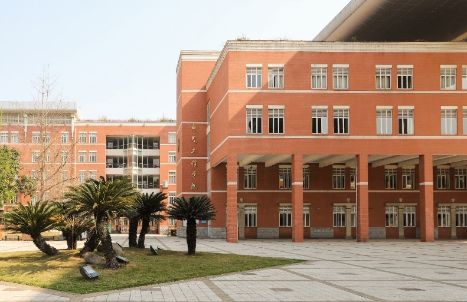

学院通知 · 科研创新
四川大学全球青年学者论坛电气工程学院分论坛诚邀天下英才
发布时间：2023-11-09
01 论坛时间 四川大学主论坛：11月23日 电气工程学院分论坛：11月24日 02 论坛介绍 四川大学全球青年学者论坛，是学校全面实施人才强校战略，加快建设世界一流大学步伐，推进“全球英才聚会工程”“双百人才工程”的重要平台。已成为四川大学的重要引才名片。 第十一届全球青年学者论坛电气工程学院分论坛诚邀海内外优秀青年人才共聚成都，共话发展。本届分论坛涵盖了 能源电气工程、控制科学与工程、人工智能与大数据 等多个学科领域，旨在搭建海内外高层次青年人才 感知学校事业发展，跨学科多领域学术交流 ，学院与青年人才对接的平台，为推进学校世界一流大学建设，建设具有全国影响力的创新人才聚集高地和科技创新中心提供更有力的人才支撑。四川大学电气工程学院为青年优秀人才提供优厚的薪酬待遇和完善的服务保障，竭诚欢迎海内外优秀青年人才依托我院申报2024年海外优青及相关人才项目。 03 论坛安排 本次分论坛采取“线上+线下”方式开展，以学科推介、政策宣讲、学术交流、视频面试、线下洽谈等多种形式开展。 04 参会条件 1年龄原则上不超过40岁； 2在国内外知名大学科研机构已经或即将取得博士学位； 3具有海外科研工作经历并取得突出学术成果者优先； 4立志在国内发展，有意来四川大学电气工程学院干事创业。 05 参会方式 请扫描以下二维码报名 （已在学校报名的人员无需重复报名） 咨询电话：028-85405101邓老师 学院甄选报名信息后，将向线上参会学者发送会议直播入口，向线下参会学者发送来校邀请函，请您耐心等待。 线上参会者报名截止11月20日，线下参会者截止11月15日。 06 学校主论坛 点击以查看学校主论坛公告 07 学院简介 四川大学是教育部直属全国重点大学，是国家布局在中国西部的“双一流”建设A类高校。四川大学电气工程学院渊源和发展变革可追溯至1908年，是我国第一批创办电气工程专业的单位之一，也是四川大学历史最悠久、规模最大的工科类实体性学院之一。 学院拥有电气工程一级学科博硕士点、人工智能交叉学科博硕士点、能源动力专业学位博硕士点、电子信息专业学位博硕士点和控制科学与工程一级学科硕士点。设有电气工程及其自动化、自动化两个本科专业，以及电气工程及其自动化专业（中外合作办学项目）。现有本科专业均为国家级一流本科专业建设点、国家级“卓越工程师教育培养计划”试点专业，其中，电气工程及其自动化专业为工程教育认证专业。拥有智能电网、电能质量与电磁环境学、信息与自动化技术等三个省级重点实验室，以及四川大学“能源互联网”研究中心，四川大学-国网四川省公司能源互联网联合研究中心，四川大学罗克韦尔智能制造协同创新中心，建有国家双创示范基地平台“超导与新能源中心”,全国示范性工程专业学位研究生联合培养基地、中科协“科创中国”清洁能源创新基地、四川省电气信息科学与工程本科人才培养基地、省级电工电子基础实验示范中心和校级工科电工电子基础课教学基地。 当前，学院以“双一流”建设为契机，围绕“双碳”目标和以新能源为主体的新型电力系统两个国家重大战略需要，依托能源电力行业优势，以“信息+、材料+、医学+”为抓手，重点建设有川大特色的强电学科。学院着力在 能源电气工程、控制科学与工程、人工智能与大数据 等领域打造高素质、国际化的教师队伍与科教融合团队，培养拔尖创新人才，大力推进基础创新与成果转化，扎实推进多学科交叉融合和协同创新，为新时代能源体系转型、工业及信息产业升级提供人才与技术支撑。 海纳百川 大器天下 川大电气 诚邀海内外英才加盟 竭诚欢迎海内外优秀人才 依托我校申报各类人才计划
